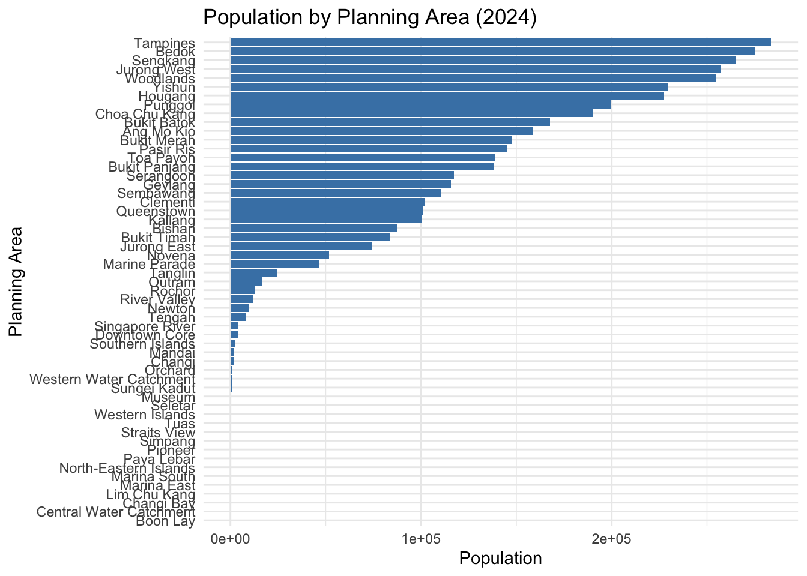

pacman::p_load(tidyverse, ggthemes, patchwork, knitr)Take-home Exercise 1: Singapore Resident Population 2024
1 Overview
1.1 Background
Singapore’s demographic profile provides critical insights for policy planning, urban development, and resource allocation. The dataset respopagesex2024.csv contains population counts by age, sex, planning area, and subzone, based on Singapore’s official population statistics for 2024. The visual analytics in this exercise aim to reveal key trends across demographics and geography.
1.2 The Data
The dataset used is respopagesex2024.csv obtained from the Department of Statistics Singapore. It includes the following fields:
PA: Planning Area
SZ: Subzone
Age: Age in years (0 to 100+)
Sex: Male or Female
Pop: Resident count
Time: Time / Period
2 Loading Packages
Explanation of R packages used in this exercise:
tidyverse
ggthemes
patchwork
knitr
3 Data Preparation
data <- read_csv("Data/respopagesex2024.csv") %>%
mutate(Age = as.numeric(Age)) %>%
drop_na(Age)Rows: 60424 Columns: 6
── Column specification ────────────────────────────────────────────────────────
Delimiter: ","
chr (4): PA, SZ, Age, Sex
dbl (2): Pop, Time
ℹ Use `spec()` to retrieve the full column specification for this data.
ℹ Specify the column types or set `show_col_types = FALSE` to quiet this message.Warning: There was 1 warning in `mutate()`.
ℹ In argument: `Age = as.numeric(Age)`.
Caused by warning:
! NAs introduced by coercion4 Exploratory Data Analysis
4.1 Age-Sex Pyramid
This population pyramid visualizes the age and gender distribution. Males are plotted on the left and females on the right, highlighting the dependency load and gender imbalance at older ages.
pyramid_data <- data %>%
group_by(Age, Sex) %>%
summarise(Pop = sum(Pop), .groups = "drop") %>%
mutate(Pop = if_else(Sex == "Males", -Pop, Pop))
pyramid_plot <- ggplot(pyramid_data, aes(x = Age, y = Pop, fill = Sex)) +
geom_bar(stat = "identity", width = 1) +
coord_flip() +
scale_y_continuous(labels = abs) +
labs(title = "Singapore Resident Population Pyramid (2024)",
x = "Age", y = "Population") +
theme_minimal()
pyramid_plot
Observations:
A bulge around ages 30–50 suggests a dominant working-age population.
Females dominate in ages 80+, reflecting higher life expectancy.
Lower base suggests declining birth rates.
4.2 Total Population by Planning Area
We aggregate population counts by planning area to identify high-density zones.
area_data <- data %>%
group_by(PA) %>%
summarise(Pop = sum(Pop), .groups = "drop") %>%
arrange(desc(Pop))
area_plot <- ggplot(area_data, aes(x = reorder(PA, Pop), y = Pop)) +
geom_col(fill = "steelblue") +
coord_flip() +
labs(title = "Population by Planning Area (2024)",
x = "Planning Area", y = "Population") +
theme_minimal()
area_plot
Observations:
Bedok, Tampines, and Jurong West remain top residential zones.
Downtown Core and industrial areas have lower populations.
4.3 Population by Age Group
We create custom age bands to evaluate demographic composition.
age_group_data <- data %>%
mutate(AgeGroup = cut(Age,
breaks = c(0,10,20,30,40,50,60,70,80,90,Inf),
labels = c("0-9", "10-19", "20-29", "30-39", "40-49",
"50-59", "60-69", "70-79", "80-89", "90+"),
right = FALSE)) %>%
group_by(AgeGroup) %>%
summarise(Pop = sum(Pop), .groups = "drop")
ggplot(age_group_data, aes(x = AgeGroup, y = Pop)) +
geom_col(fill = "darkgreen") +
labs(title = "Population by Age Group (2024)", x = "Age Group", y = "Population") +
theme_minimal()
Observations:
Highest population in 30–49 age range.
Smaller youth segments may impact future workforce.
4.4 Top 10 Most Populous Subzones
We identify the most densely populated subzones for finer-scale planning.
top_subzones <- data %>%
group_by(SZ) %>%
summarise(Pop = sum(Pop), .groups = "drop") %>%
slice_max(Pop, n = 10)
ggplot(top_subzones, aes(x = reorder(SZ, Pop), y = Pop)) +
geom_col(fill = "tomato") +
coord_flip() +
labs(title = "Top 10 Most Populous Subzones (2024)", x = "Subzone", y = "Population") +
theme_minimal()
Observations:
High-density subzones often belong to mature estates.
May require targeted service scaling (e.g., schools, healthcare).
5 Summary
The 2024 resident population profile shows a mature demographic with a heavy concentration in working-age groups and aging females. Spatially, population remains concentrated in mature heartland estates. These findings should inform housing, healthcare, and aging policies.
6 References
- Department of Statistics Singapore. (2024). Resident Population by Age, Sex and Planning Area/Subzone. https://www.singstat.gov.sg/